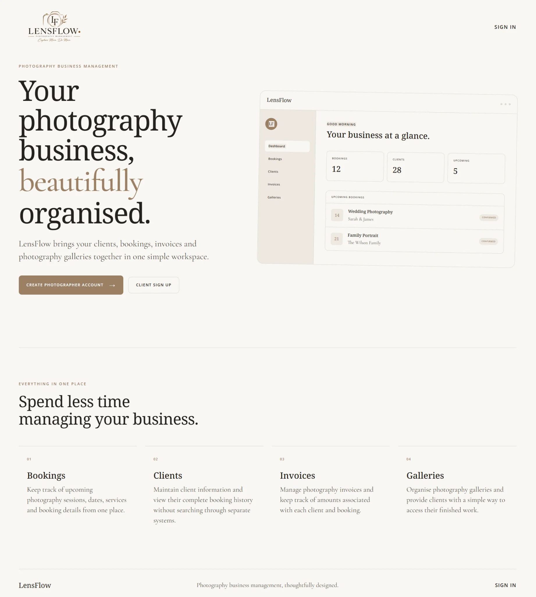

01 / FLAGSHIP2026
lensflow / photography platform↗

PHOTOGRAPHY BUSINESS PLATFORM↗
PROJECT 01 / FULL-STACK
2026
LensFlow ↗
A complete photography business management platform built with a real stakeholder, from bookings and invoicing to galleries and payments.
ReactExpressPostgreSQLStripe
View case study ↗